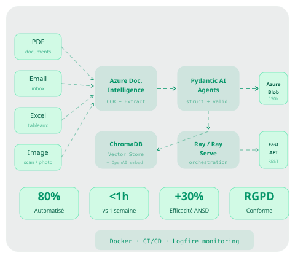

Data Engineer · Développeur IA
Spécialisé en pipelines de données end-to-end, orchestration d'agents IA et infrastructure de bases vectorielles. Chez Little John, j'ai conçu l'intégralité de l'infrastructure data : pipeline ETL Azure, orchestration Ray, RAG ChromaDB — réduisant le temps de traitement de 1 semaine à moins d'1 heure.

Recruté en stage de fin d'études ENSAI pour concevoir l'infrastructure data end-to-end de Little John. Architecture complète : ingestion documentaire Azure, orchestration agents IA, base vectorielle RAG, fine-tuning SLM, industrialisation Docker/CI-CD.
Traitement de données massives issues de Stack Overflow (2017–2023). Pipeline NLP complet sur données longitudinales : preprocessing, tokenisation, modélisation thématique, feature engineering.
Développement et gestion d'une plateforme interne de gestion RH/recrutements au sein de l'Agence Nationale de la Statistique du Sénégal.
Construire des pipelines capables d'ingérer, classifier, extraire et stocker des milliers de documents hétérogènes avec des agents IA qui garantissent la structure des sorties.
Concevoir et déployer des pipelines de données robustes sur infrastructure cloud : ingestion multi-sources, transformation, validation, stockage — avec monitoring et conformité réglementaire.
Mettre en place des architectures multi-agents capables de traiter des tâches complexes en parallèle : extraction, validation, transformation, génération — avec garanties de structure.
Déployer des systèmes de recherche sémantique vectorielle sur corpus documentaire : embeddings, base vectorielle, pipeline RAG complet avec fallback multi-modèles pour la résilience.
Industrialiser des modèles ML en services de production : Docker, CI/CD, monitoring des performances (drift, latence), versionnement des modèles, API REST robuste.
Traiter et analyser des volumes importants de données avec PySpark, construire des pipelines analytiques reproductibles et des tableaux de bord pour le pilotage métier.
Formation d'ingénieur data scientist (Bac+5) qui m'a donné les bases solides pour le data engineering : traitement de données volumineuses, pipelines, déploiement de modèles ML en production. J'y ai appris à concevoir des architectures data complètes, de l'ingestion à la mise à disposition. Stage chez Little John où j'ai conçu l'infrastructure data end-to-end.
Formation qui m'a appris à travailler avec des données réelles à grande échelle : enquêtes multi-pays, bases administratives, données longitudinales. J'y ai acquis la rigueur du traitement de données indispensable à un bon data engineer.
Disponible pour des missions en Data Engineering, infrastructure cloud, pipelines de données ou développement d'agents IA.